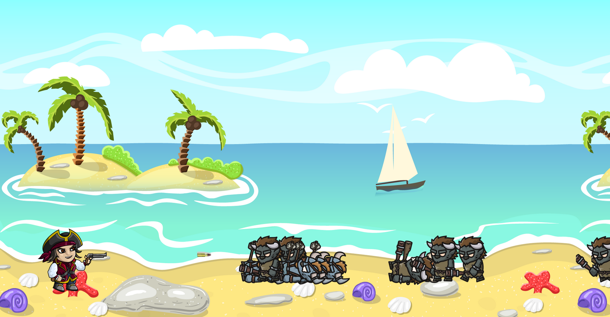

Eine lebendige Spielwelt erschaffen.
Ziel war die Entwicklung eines 2D-Spiels mit einer frei erkundbaren Umgebung, dynamischen Gegnern und einem langfristig motivierenden Gameplay.
2D-Actionspiel mit dynamischen Gegnern, zufälligen Monster-Spawns und einer endlosen Spielwelt. Entwickelt im Rahmen des Young Coders Programms der Developer Akademie.
Endlose Welt
Monster-Spawns
Gegnertypen
Developer Akademie
Ziel war die Entwicklung eines 2D-Spiels mit einer frei erkundbaren Umgebung, dynamischen Gegnern und einem langfristig motivierenden Gameplay.


Verschiedene Gegnertypen erscheinen zufällig in der Spielwelt und sorgen durch unterschiedliche Eigenschaften für abwechslungsreiche Herausforderungen.
Gegner erscheinen dynamisch während des Spielverlaufs.
Verschiedene Monster mit individuellen Eigenschaften und Schwierigkeitsgraden.
Die Kamera folgt dem Spieler und ermöglicht eine kontinuierliche Erkundung der Umgebung.
Durch unterschiedliche Gegner entsteht ein fortlaufender Anstieg der Herausforderung.
Gameplay


Unterschiedliche Monster sorgen für abwechslungsreiche Kämpfe und steigende Schwierigkeit.

Die Kamera folgt dem Spieler und ermöglicht eine fortlaufende Erkundung der Umgebung.
Das Projekt wurde im Rahmen des Young Coders Programms der Developer Akademie entwickelt.
Dabei konnte ich praktische Erfahrungen in den Bereichen Spielarchitektur, objektorientierte Programmierung, Gegnerlogik, Zufallsgenerierung und Kamera-Management sammeln.